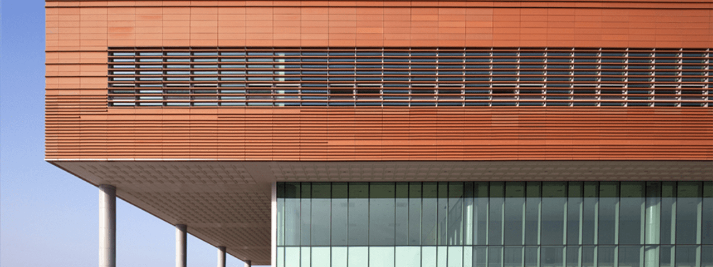
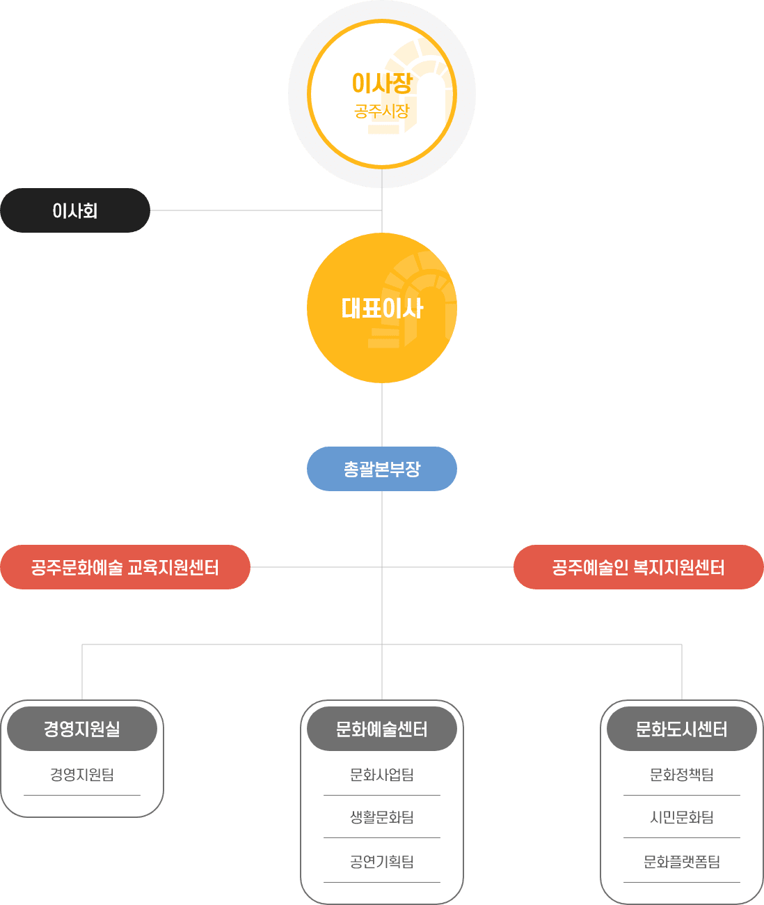
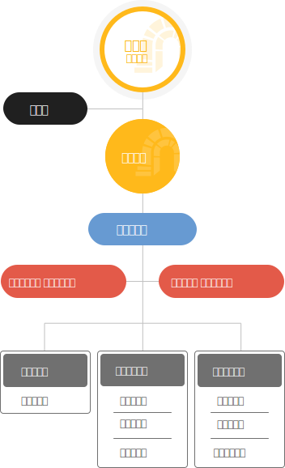

미래유산도시공주 조직도
공주문화관광재단 홈페이지를 찾아주셔서 진심으로 감사말씀 드립니다.



문화도시센터장
-
센터장
강태구
- 문화도시 조성사업 운영 총괄
- 문화도시센터 운영 총괄
- 대·내외 연계 협력 총괄
문화 정책팀
-
팀장
김세진
- 문화정책팀 업무 총괄
- 기관 경영평가 관리 업무
- 문체부, 지역문화진흥원, 전국지역문화재단연합회, 한국메세나협회 네트워크 업무 총괄
- 공주문화정책위원회 운영 · 관리(정)
- 공주 문화도시 연구 · 정책조사 사업
- 문화공론장 - 민관문화협치 회의 운영 · 관리
- 공주문화관광정책 연구조사 사업
- 문화관광정책 컨퍼런스 · 워크숍 운영
- 공주문화예술데이터베이스 조사
- 소외지역 마을예술창작소 조성사업 운영
- 지역형 문화예술교육 거점 조성 협의체 운영 · 네트워크 관리 업무
- 청년 문화예술 기록사업 · 아카이빙 업무
- 문화도시 사업자료 취합 및 보고(정)
-
주임
이수연
- 공주 미래유산 시민공모사업
- 청년 예술인 활동 지원사업 운영
- 청년 문화예술 네트워크 개발 · 관리 업무
- 공주문화정책위원회 운영 · 관리(부)
- 문화도시 웹진 〈 Zoom : in 〉제작
- 공주 문화도시 아카이브 운영 · 관리
- 문화정보데이터 구축사업
- 지역문화통합관리 시스템 데이터 입력 및 관리
- 지역문화진흥원 네트워크 업무
- 공주문화도시센터 홈페이지 고도화 및 관리 업무
- 문화도시 사업자료 취합 및 보고(부)
- 문화도시 운영 관련 조사 · 정리 업무(정)
- 문화정책팀 서무
- 문화도시 시민유산 활성화 사업 – 월간 홍보물 제작 업무
- (이월)중간지원조직협의체 포럼 및 간담회 운영
-
공석
- 시민문화활동지원사업 - 1004명에게 듣다 〈다시〉운영 업무
- 시민문화활동지원사업 홍보 및 아카이브 업무
- 문화도시 간 지역벨트 구축 및 네트워크 업무
- 충청권 상생협력 워크숍 운영 업무
- 백제역사문화권 문화도시 간 업무협약 및 협업사업 운영 업무
- 문화도시 박람회 부스 운영 준비 업무
- 문화도시 박람회 홍보물 제작 및 관리
- 전국문화도시협의회 네트워크 업무
- 문화예술 모니터링 운영 업무
- 문화도시 시민모니터링단 운영 · 관리
- 문화도시 시민모니터링단 발대식 운영 및 전문교육 진행
- 문화도시⋅문화관광재단 신규회원 모집 업무
- 문화도시⋅문화관광재단 회원 데이터 관리 업무
- 공주문화관광재단 및 문화도시 사업 만족도조사 운영 · 관리
- (이월)시민공유테이블 ‘다시’ 문화실험 운영 업무
시민 문화팀
-
팀장
강태구
- 미래유산 학당 총괄
- 휴먼유산 꾼 양성 총괄
- 공주문화예술교육지원센터 총괄
- 공주문화예술교육지원센터 운영
- 미래유산 학당 ‘참여학당’ 운영
- 미래유산 학당 ‘미래유산 모둠활동 지원’ 교육사업 운영
- 미래유산 학당 ‘미래유산 모둠활동 지원’ 지원사업 운영
- 미래유산 학당 ‘예비청년 창직과정 지원사업’ 교육 운영
- 미래유산 학당 ‘예비청년 창직과정 지원사업’ 체험 운영
- 미래유산 학당 ‘문화인력 인턴십 프로그램’ 운영
- 미래유산 학당 ‘교육유산 박람회’ 운영
- (이월)청년문화활동가 양성사업 운영
- (이월)청년문화활동가 지원사업 운영
-
주임
김정현
- 시민문화팀 서무
- 휴먼유산 꾼 양성 ‘휴먼 전수자’ 교육 운영
- 휴먼유산 꾼 양성 ‘휴먼 전수자’ 체험마당 운영
- 휴먼유산 꾼 양성 ‘휴먼 북(human book)’(청소년) 운영
- 휴먼유산 꾼 양성 ‘휴먼 북(human book)’(마을주민) 운영
- 휴먼유산 꾼 양성 ‘휴먼 북(human book)’ 콘텐츠 개발
- 휴먼유산 꾼 양성 ‘미래유산활용 상품개발’(기획반) 운영
- 휴먼유산 꾼 양성 ‘미래유산활용 상품개발’(개발반) 운영
- 휴먼유산 꾼 양성 ‘미래유산활용 상품개발’(개발반) 지원
문화 플랫폼팀
-
팀장
김상훈
- 문화플랫폼팀 업무 총괄
- 미래유산도시페스타 총괄
- 미래유산도시브랜딩 총괄
- [미래유산도시페스타] 지역거점페스타
- [미래유산도시페스타] 웰컴투신관동
- [미래유산도시페스타] 뮤지컬 하숙:솔바람
- [미래유산도시페스타] 거리퍼레이드 총연출
- [미래유산도시페스타] 공주대학로길 거리페스티벌 총연출 등
- [미래유산도시페스타] 동계 경관조명 연출 진행(신관동)
- [미래유산도시페스타] 동계 덕분애 콘서트 진행
- [미래유산도시브랜딩] 연말 제작물 제작(캘린더 등)
- [미래유산도시브랜딩] 동계 경관조명 연출 진행(고마아트센터)
- [미래유산도시브랜딩] 굿즈제작 등 디자인 개발
- 문화시민포럼 진행
-
대리
한은정
- [어디쉐어] 업무 총괄
- [어디쉐어] 신관동 지역 공간개발 및 운영
- [어디쉐어] 제민천 인근 공간개발 및 운영
- [어디쉐어] 지역 읍/면 거점공간 개발 및 운영
- [어디쉐어] 문학사랑방(중학동) 문학거점 공간 운영(프로그램 진행 등)
- [어디쉐어] 청년의 집(국고개길) 디자인센터 운영 총괄
- [미래유산도시브랜딩] 로컬잡지(웹진) 개발(지역잡지 연계)/월간지
- [미래유산도시브랜딩] 문화도시 사업별 홍보 진행
-
주임
김도희
- 고마문화시장 업무 총괄(월간)
- [고마문화시장] 마켓꼼 진행
- [고마문화시장] 마켓꼼 여름 스페셜 장터 진행
- 그림상점로 업무 총괄(월간)
- [그림상점로] 대관/도록/광고.홍보/작품정리 등
- [미래유산도시브랜딩] 문화도시 홍보용 영상 진행
- [미래유산도시브랜딩] 문화도시 유튜브 채널(방송국) 운영
- [미래유산도시브랜딩] SNS 채널관리(인스타그램/유튜브)
- 팀서무 및 예산관리
-
주임
황동욱
- [그림상점로] 아트마켓 운영 및 진행
- [그림상점로] 그림 상점로 지역활성화 정산 및 진행
- [미래유산도시브랜딩] 홈페이지 관리 및 업로드
- [미래유산도시브랜딩] 로컬잡지(웹진) 업무보조
- [미래유산도시브랜딩] 동계경관 설치 업무보조(고마아트센터)
- [미래유산도시브랜딩] SNS 채널 관리(블로그/페이스북)
- [미래유산도시브랜딩] 문화도시 홍보용차량 임차관리
- [미래기억센터] 하숙마을 행사 진행<하숙1번지>
- 행정업무 보조
경영
-
주임
유현빈